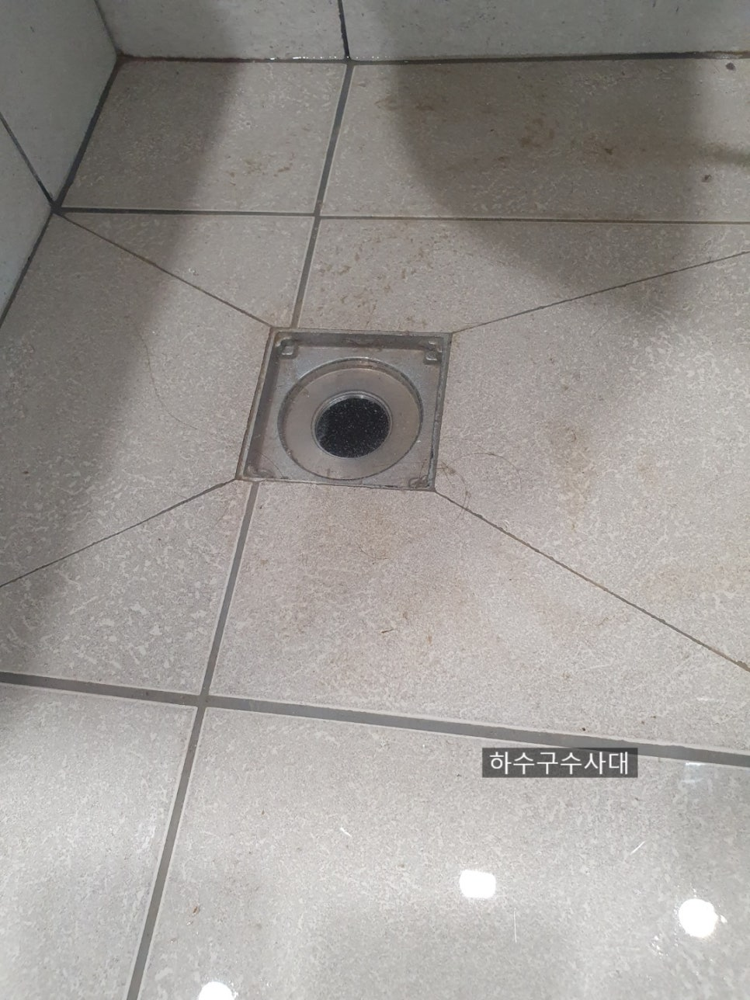
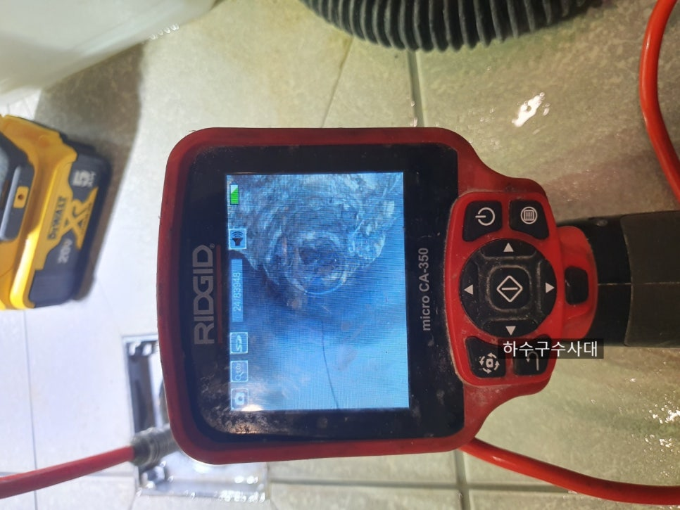
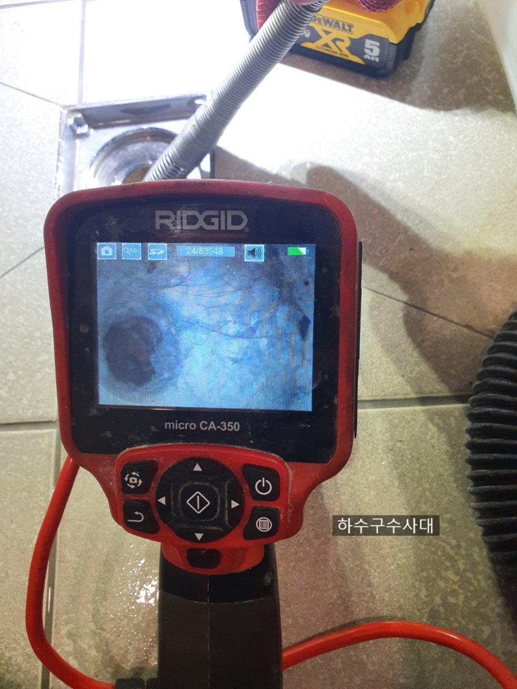
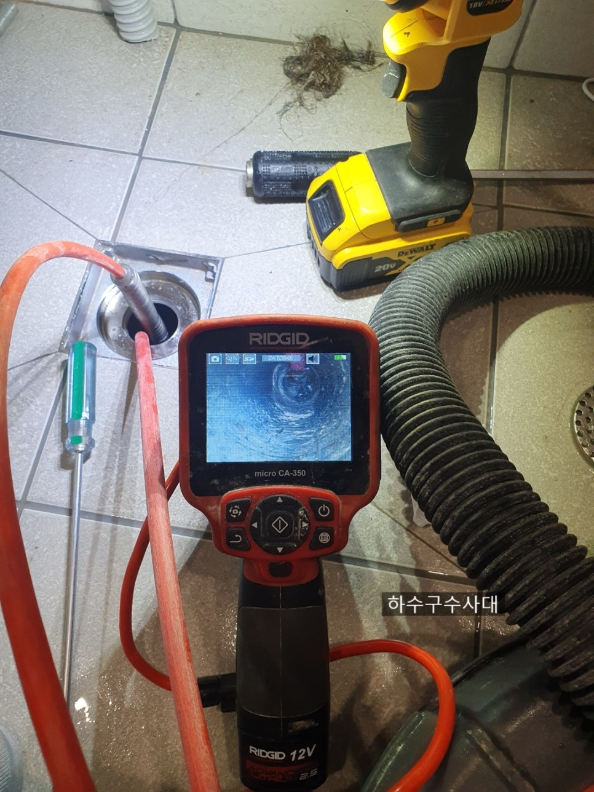
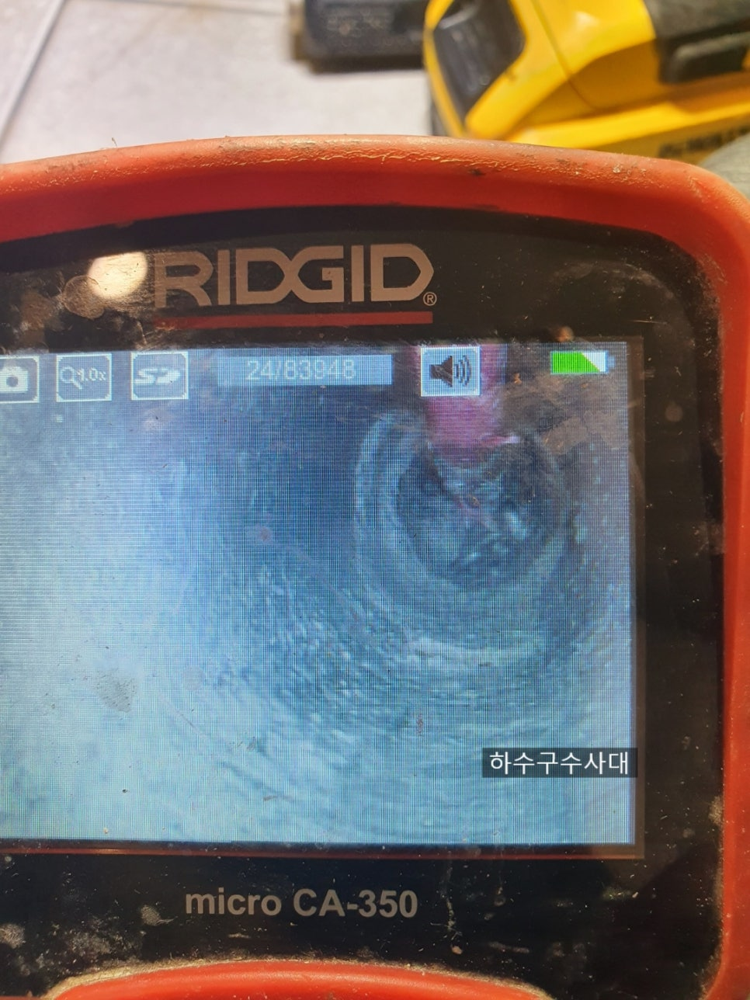
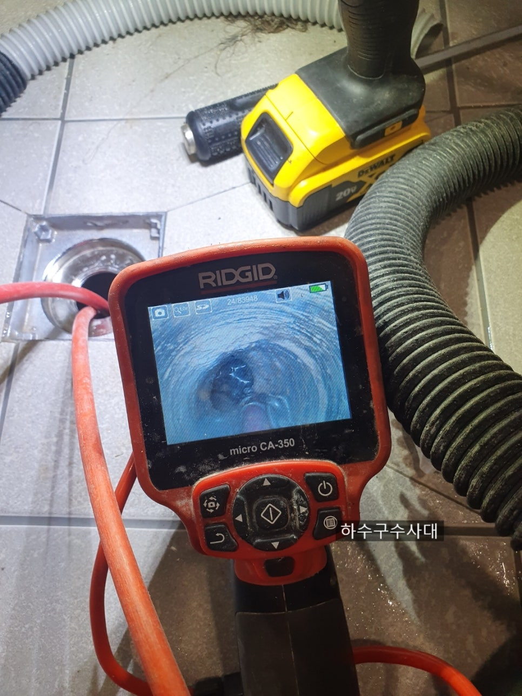

🏠 욕실하수구막힘 석회제거 하수구뚫음
서울 싱크대막힘 전문 시공 후기

📋 작업 개요
- 위치: 서울
- 서비스 유형: 싱크대막힘, 변기막힘, 하수구막힘, 배관막힘, 뚫는업체
- 작업 일시: 2021. 6. 11. 0:19
- 업체명: 하수구수사대 (010-5615-2118)
🔍 문제 상황
안녕하세요 여러분
예보대로 오늘밤부터 비가 시원하게
오고 있습니다.
요즘 6월치고 너무 더워서
조금만 움직여도 땀이 많이 납니다.
방온도가 무려29도라니 말다했죠.
선풍기 틀고자야 잠이오는
계절이 돌아왔네요^^
모두 감기 조심하시고 건강관리에
유의하시길 바랍니다.
욕실하수구막힘 석회제거 현장을
다녀왔습니다.
장안구 정자동의 한아파트였는데요
집에 들어가보니 전체 리모델링을
하신 상태더라구요.
하지만 늘 안타까운건 리모델링을
할때 배관은 신경을
안쓴다는거죠 ㅜㅜ
오늘 방문한 고객님의 집은
세면대 물을 틀면 욕실바닥으로
빠지는 유가와 만나서 하수구로
나가는 구조인데
세면대 물을 틀면 욕실바닥하수구에서
막혀있어 물이 차오르는 증상이였습니다.
욕실바닥하수구막힘
세면대를 틀면 물이 거의 안내려가고
바닥에서 올라오고 있습니다.

🔎 원인 분석
💡 전문가 진단: 정밀 진단 장비를 사용하여 슬러지의 고착 여부를 판명하고 타격/세척 작업을 실시했습니다.
우선물을빼주고 내시경으로
배관상태를 확인해 보기로 합니다.
내시경검수
역시 석회와 머리카락이 엉겨있어서 물이
빠지지 않고 있네요.
밑에는 소재구가 있어서
석회와 머리카락이 못넘어가고
꽉 막고있으니 물이
아주 천천히 거의 안내려가다시피 합니다.
하수구석회
위쪽 겉에도 석회가 많이
있어 일단 전체적인 석회제거작업을
하기로 하였습니다.
석회제거작업
욕실하수구막힘 석회제거작업은
조심히 제거해야합니다.
간혹 장비에 힘을주거나 무리하게
석회를깨려고 하면 배관에
구멍이 날수도 있기 때문입니다.
특히나 배관밑에 소재구방식으로 되어
있는 구조를 고객분들이
직접 해보겠다고 긴 막대기같은걸로
힘을주어 하수구에 계속 쑤시다가는
밑에집에 물벼락을 퍼붓는
대참하가 일어나기도 합니다.
어떤집은 변기가 막혀서 펌프질을
신나게 하시다가 물이 빠져서

🔧 작업 과정
뚫린줄 알았는데 밑에집 천장은
똥바다가 된 집도 봤습니다.
배관 자체에 문제가 있었던거죠
배관에는 절대 힘들 가하여
작업해서는 안됩니다.
소재구석회
장비가 소재구바닥까지 들어가
석회제거를 하고 있습니다.
소재구뚜꺼에 석회덩어리가 나오질
않고 버티고 있네요.
하지만 다 잡에 빼는 수가 있죠^^
석션작업
석션과 픽업툴만 있으면
만사 오케이입니다.
석회를 깨고부수고 빨아내는
작업을 반복하여 해줍니다.
고객님께서 밑에집에 피해를 최대한
주지않고 싶다고 하셔서
최대한 조용히~~~조심조심
작업은 진행했습니다.
석회와 머리카락
석회도 많고 머리카락도 석회때문에
못나가고 물길을 꽉 막고 있었습니다.
이집은 다행히 인테리어하면서
이물질이 들어간거 같지는 않지만
그전에 사셨던분들은 어떻게
쓰셨는지 궁금할정도로 심하게
막혀있었습니다.
석회제거후사진
소재구뚜껑이 잘보이고 있네요
석회가 얇게 남아있긴한데
너무 딱딱하여 놔두기로 했습니다.
물을쓰는데 지장은 없지만
저딱딱한건 완전히 제가하려면
배관에 깨질수 있기때문입니다.
배수테스트
물이 잘빠지고 있습니다^^
물을 세면대에 많이 받고
테스트를 해도 물이 시원하게
잘빠지네요^^
리모델링을 하셨다길래
서비스로 싱크대 배관도 내시경검수를
진행해 드렸습니다.
다행히 싱크대배관 상태는


✅ 작업 완료
좋습니다.
고객님께서도 이제 싱크대,욕실 모두
봤으니 안심하고 물쓸수 있어서
다행이라고 하시네요.
욕실하수구막힘 석회제거 완벽해결!!!
벌써금요일입니다.
여러분모두 즐거운 주말 보내시고
하수구수사대는 이만 물러가겠습니다.
하수구수사대
서울 / 경기 / 인천
010-2340-2118




⚠️ 주방 싱크대 배관 막힘 예방 수칙
- ✅ 기름기가 묻은 식기나 프라이팬은 설거지 전 키친타올로 반드시 기름때를 닦아내세요.
- ✅ 주기적으로 싱크대 개수대에 뜨거운 물을 가득 받아 한 번에 내려 배관 내부 기름을 씻어내세요.
- ✅ 배수구 거름망을 미세한 필터로 사용하시고 음식물 찌꺼기가 틈으로 새어 들지 않게 관리하세요.
- ✅ 베이킹소다와 식초를 뜨거운 물과 함께 일주일에 한 번씩 부어주면 배관 살균과 막힘 예방에 좋습니다.
💡 핵심 정리
- 확실한 장비 작업(내시경 점검 및 샤프트 스케일링)으로 원인을 뿌리 뽑습니다.
- 작업 후 1년 이내에 동일한 부위 재발 시 100% 무상 A/S 서비스를 보장합니다.
- 서울 · 경기 · 인천 전 지역에 24시간 언제든 긴급 출동할 수 있도록 항시 대기 중입니다.
❓ 자주 묻는 질문 (FAQ)
🚨 서울 싱크대막힘 문제로 고민이신가요?
정확한 원인 진단과 확실한 시공으로 재발 없는 해결을 약속드립니다.
24시간 긴급 출동 | 서울 · 경기 · 인천 전지역 | 1년 내 재발 시 무상 A/S